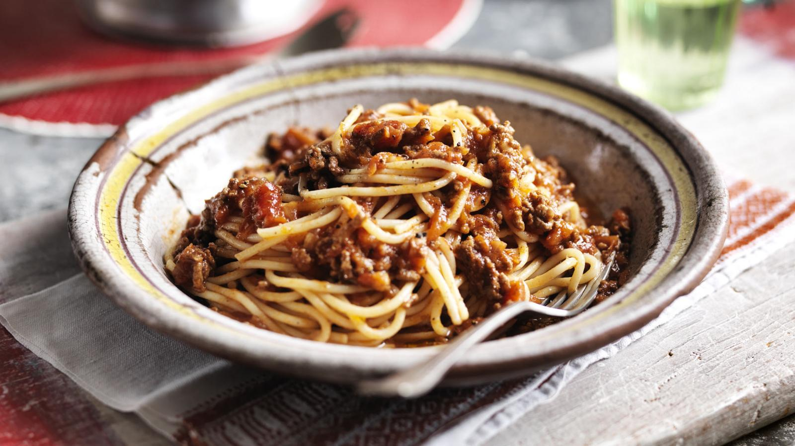

Spaghetti Bolognese

In this recipe you will learn how to make Spaghetti Bolognese. This is a dirty oul Spaghetti Bolognese that tastes like mother teresa's toe nails.
Ingredients
- Spaghetti pasta
- Ground beef or minced meat
- Onion
- Garlic
- Canned tomatoes
Steps
- Cook the spaghetti pasta according to package directions until it is al dente.
- While the pasta is cooking, heat some olive oil in a large skillet over medium heat.
- Add the ground beef or minced meat to the skillet and cook until it is browned, breaking it up with a spoon as it cooks.
- Add the chopped onion and garlic to the skillet and continue cooking until the onion is translucent and fragrant.
- Pour in the canned tomatoes and stir everything together well.
- Bring the mixture to a simmer and then reduce the heat to low.
- Let the bolognese sauce simmer for 15-20 minutes, stirring occasionally, until it has thickened and the flavors have melded together.
- Serve the bolognese sauce over the cooked spaghetti pasta, garnished with grated Parmesan cheese and chopped fresh parsley, if desired.